Trabajos/Crónicas del Barro Infinito
Miniserie animada · Creador & Director
Dos hermanos huérfanos y su tío chanta bajan al fondo del Riachuelo detrás de un mapa dibujado a mano, buscando al Sapo — la bestia con la que Lanús se asusta desde 1994.
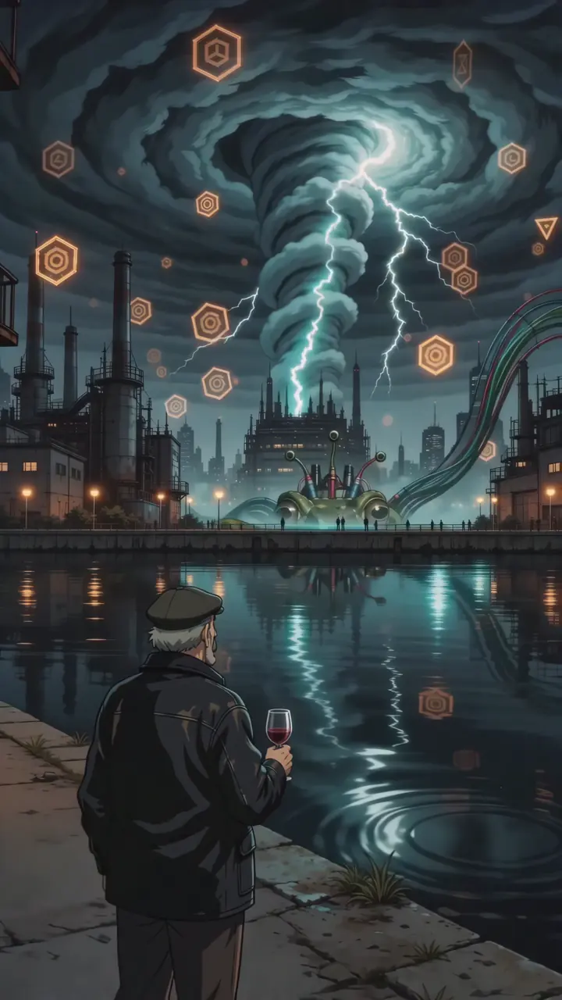
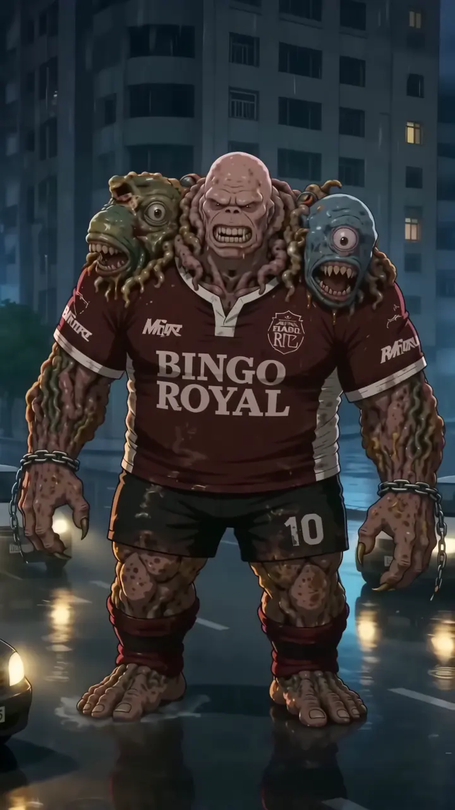
Formato
11 episodios + short pieces
Duración
~6 min por episodio · shorts de 90–140 s
Género
Aventura · humor negro · horror de proyección
Locación
Lanús, conurbano bonaerense
Sinopsis
En Lanús las deudas no prescriben. Hace treinta años el barrio contrajo una y nunca la pagó; desde entonces cuenta que en el fondo del Riachuelo vive un sapo del tamaño de una casa. Todos saben cómo es. Nadie lo vio nunca.
Joel tiene 12 años y cuenta lo que falta. Pili tiene 13 y le habla a los animales. Cuando sacan del barro un mapa dibujado a mano, el tío —un chanta cuyos datos son siempre truchos— decide que esta vez sí. Bajan a buscarlo.
El conurbano es
un estado mental.
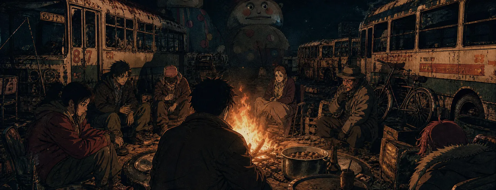
Personajes
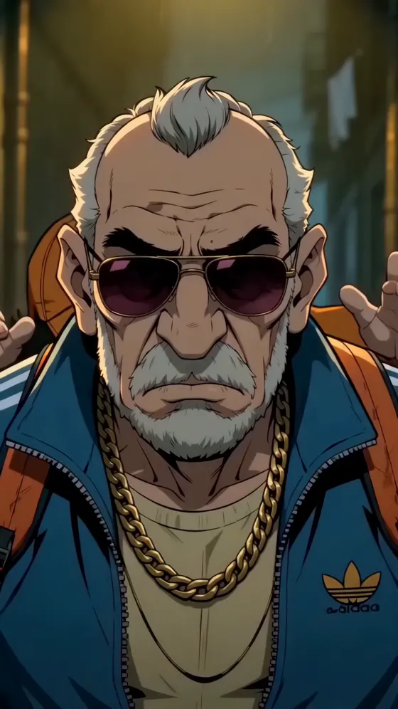
El Cóndor
El testigo cobarde. Adidas azul y cadena de oro. Sus datos son siempre truchos.
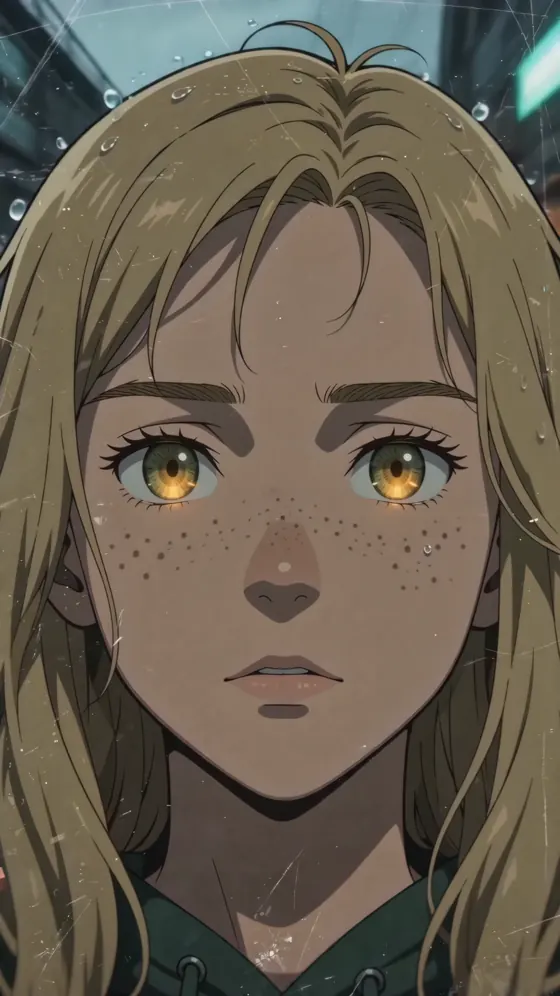
Pili, 13
La única que no proyecta al Sapo. Su quietud es lo más aterrador del plano.
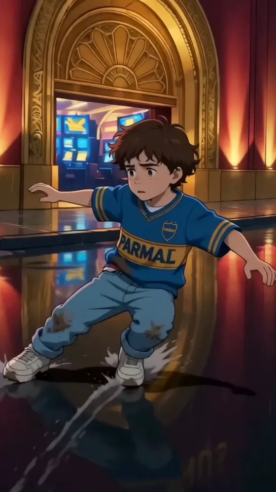
Joel, 12
El auditor. Cuenta faltas con los dedos. Camiseta Parmalat del 98.
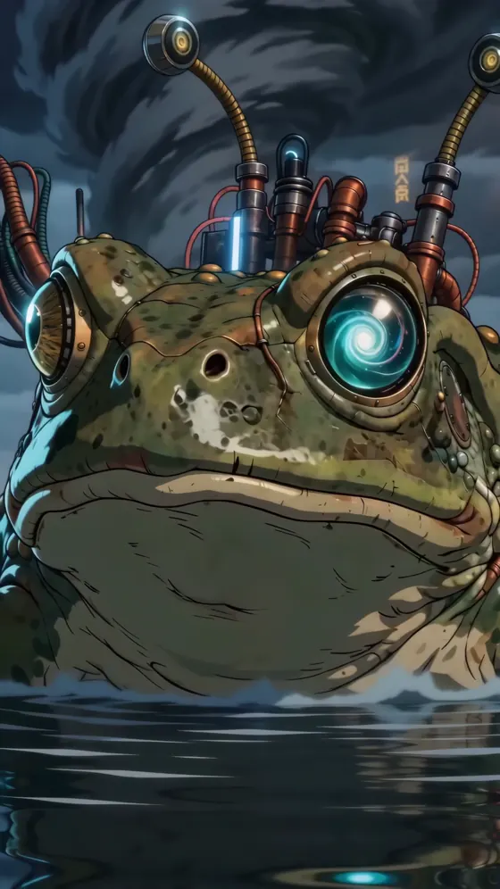
El Sapo
La proyección. No se muestra entero ni se confirma nunca: es lo que cada uno ve.
Proceso
Una pieza por etapa. Cada plano de la serie pasa por todas: se diseña a mano, se bloquea en 3D para fijar escala y cámara, se dibuja en storyboard y recién después se genera.
01Diseño de personaje
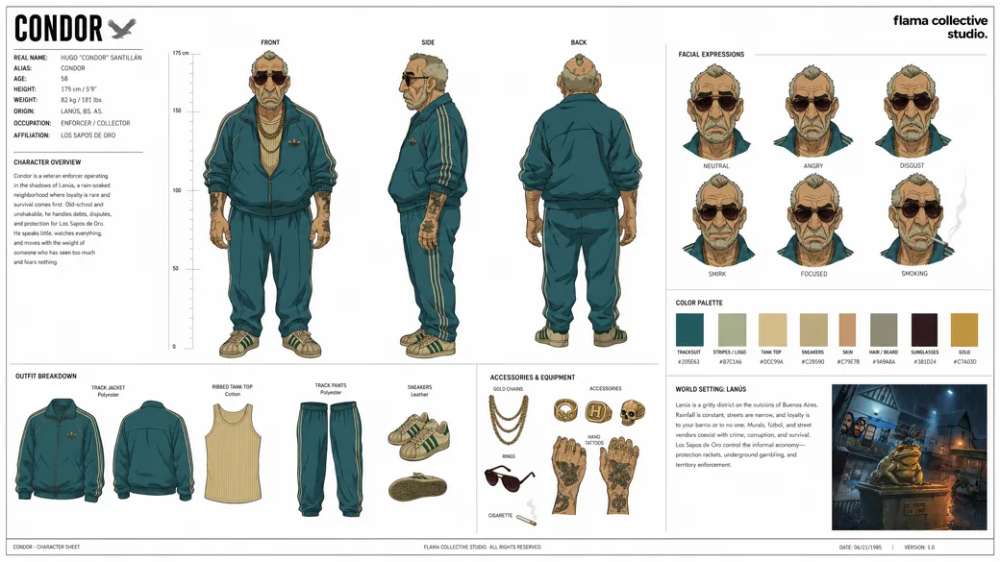
Turnaround, paleta, prendas y expresiones. Es la referencia que después entra a generación.
02Diseño de prop
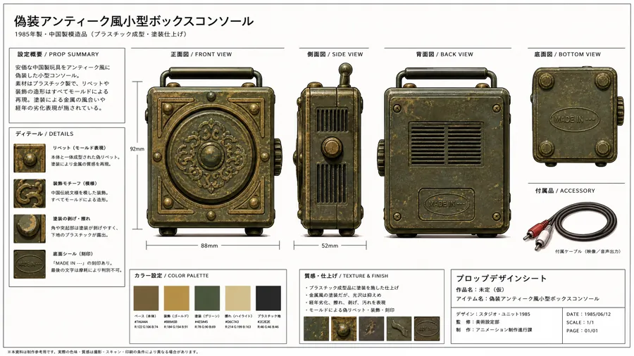
La caja del robo. Los objetos que vuelven episodio a episodio tienen su lámina igual que los personajes.
03Locación
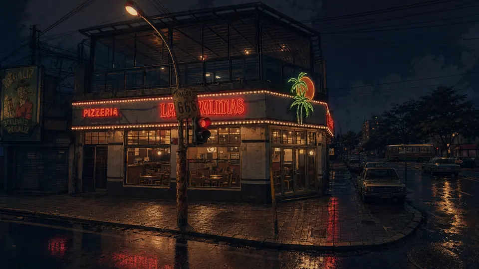
La pizzería. Veinte locaciones con lámina propia sostienen la continuidad del barrio.
04Blockout 3D
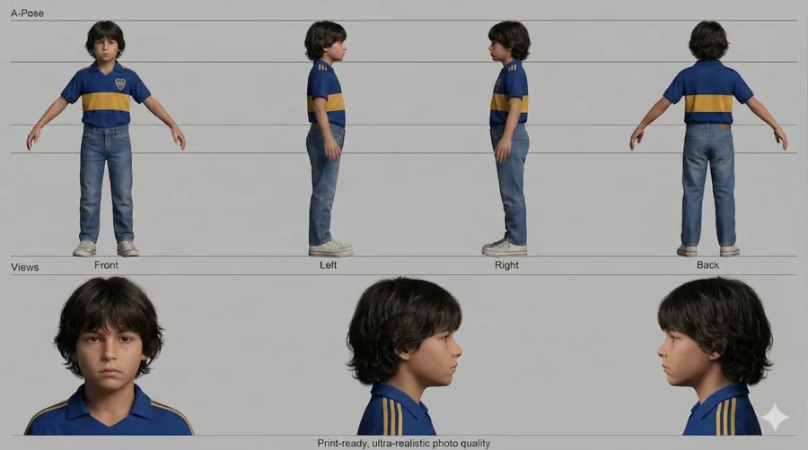
A-pose y cuatro vistas. Sirve para fijar altura y cámara antes de generar: la escala deja de discutirse.
05Storyboard
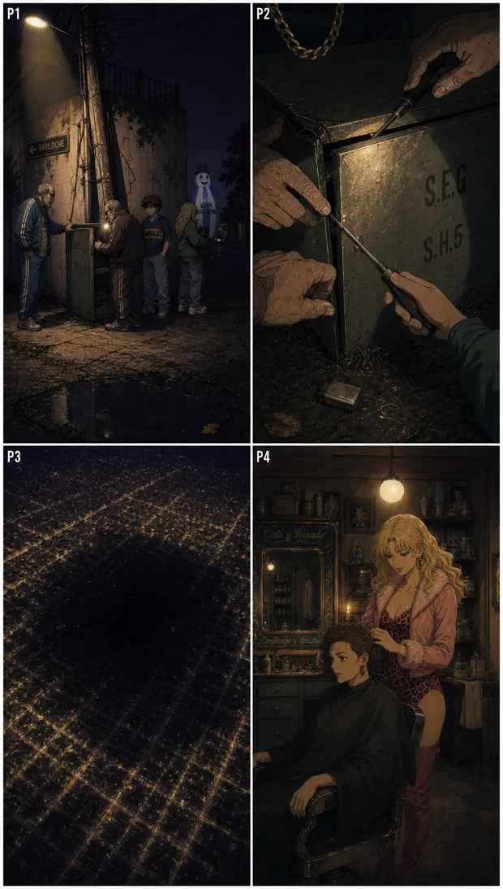
Cuatro paneles por lámina. Acá se resuelve el tono y la luz, que el blockout no resuelve.
06Plano generado
El resultado. Con el diseño como referencia y el layout como guía, el modelo genera encima.
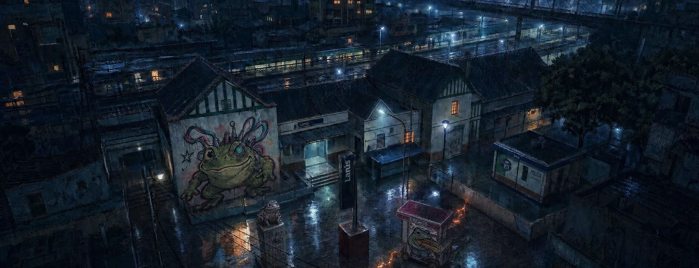
Estado de producción
11
Episodios escritos
347
Tomas de voz
269
Música y SFX originales
La biblia y los storyboards de la temporada están cerrados. Hoy el trabajo está en el piloto del episodio 1.
¿Te interesa el proyecto?